Usability Study on Website Builders
Catergory: research
Keywords: usability, testing, interview, observation, quantitative data, qualitative data, metrics, system usability scale
Team: 6 (most of the works were done by team, represent the work contributed mainly by myself)
This project aimed to compare the two popular website builders: Wix and Weebly. The A website builder is a convenient tool for people to build a website with no coding and less designing process. We tried to design and conduct usability testing to find the pros and cons of using these two particular website builders.
Deliverables: presentation
Designing Tasks
First, we needed to set up the testing goal. We decided to look in-depth into the usability issues of exploring the website builder, finding the ideal templates and domains, using the editing function, saving and publishing the website.
Second, we decided to adopt performance metrics, self-reported metrics, and behavioral metrics to evaluate the system usability so that we could collect both quantitative and qualitative data to make a precise conclusion.

For performance metrics, we used task success metric, time metric, and efficiency metric (number of attempts). Measuring errors is not right for every situation. Given the fact that there were no so-called errors that would result in a significant loss in efficiency, nor would they cost losses to the user or the company, we didn’t use the error metric.
For self-reported metrics, we used a five-point scale for difficulty and the classic system usability scale.
Preparation
We did a pilot test and refined the test plan. In order to create a standard environment for every participant, we registered new accounts on Wix and Weebly and created several copies of templates. To make sure that the participant understands every term in the tasks, we also made some instructional image to show them during the test.

To avoid browser’s auto filling, we used Chrome’s incognito tabs to do the testing. Each team had both Mac and PC laptops so the participant could choose his/her familiar one.

We tried some screen casting software and found an ideal tool that can record both the screen and webcam (for observing participants’ expressions) and the record size is relatively small.
Testing
We had 8 participants who are all novices: they had never used any website builder before. To reduce bias and deviation, the team was divided into two small teams to conduct the testing separately and each small team got 2 participants for Wix and 2 for Weebly.
Moderator, note taker, and observer were the 3 roles for the testing and I was the note taker. The participant was required to finish 7 tasks. The tasks were independent: participant’s performance of one task would not affect the others.
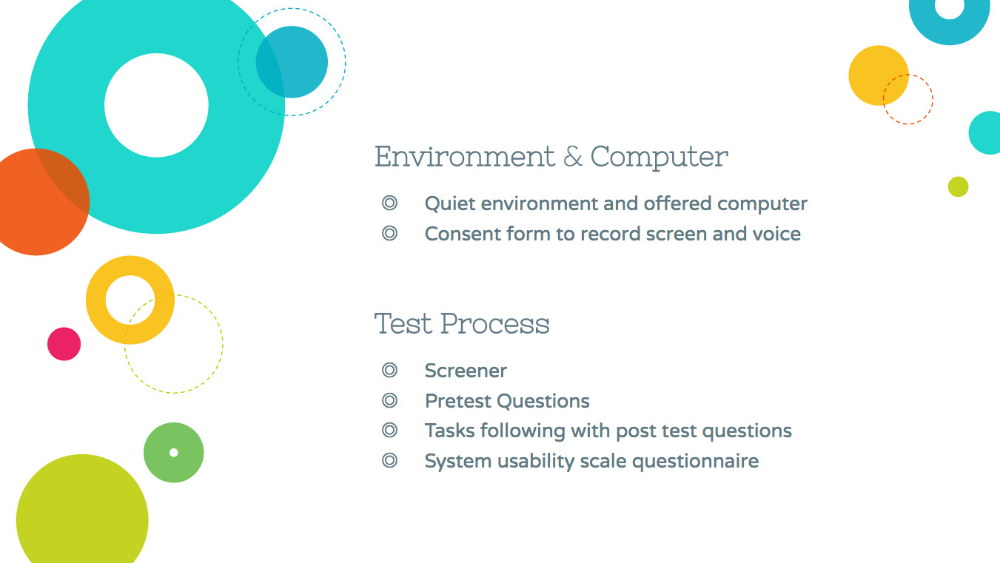
We let the participants finish the task by their own and asked them to rate the task difficulty instead of thinking aloud during the test so that we could get precise records on their time cost.
The participants were encouraged to make any comments after a task and they filled a system usability scale form after the whole test.
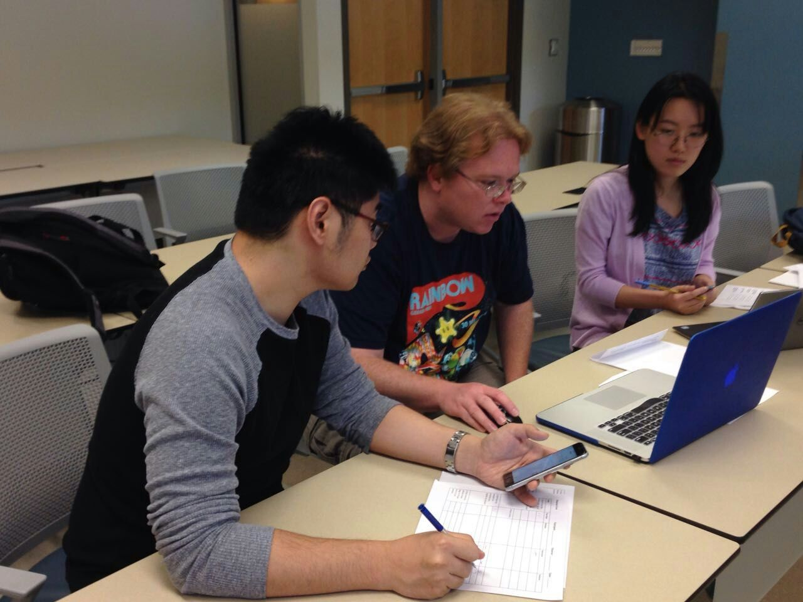
To end a task if the participant was not successful, we would tell the participants at the beginning that they could give up at the point they wouldn’t want to continue. And we would also “call” the task after a predefined amount of time has passed. We would not tell the participant that we would time them in order to let them be relaxed.
Data Collection & Analysis


We took notes during the testing and then transformed the data into Excel sheets to analyze.
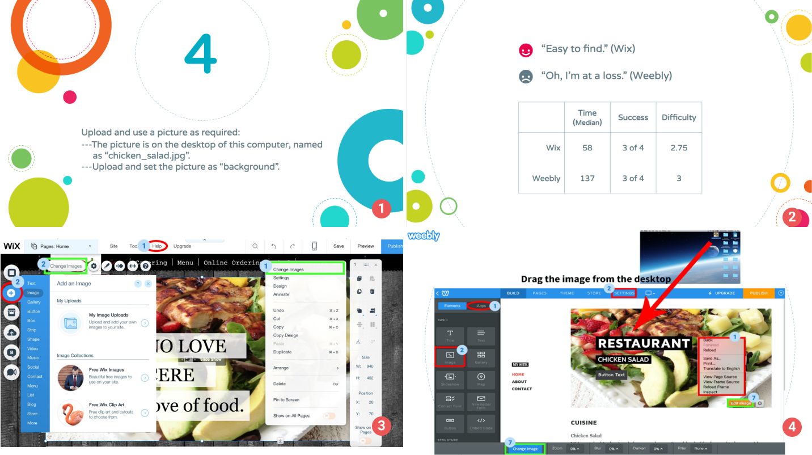
As mentioned, we used both qualitative and quantitative data to examine the usability. The quotes were powerful to show the participants' attitudes. The scores were straight forward in terms of comparing the two websites.
We marked out the average number of attempts by the participants' performances and the wrong attempts were circled with red color. Take the task 6 as an example. The task was:
Apply the required font style to your website: font family of the headline to Georgia; font size of the headline to 55.
The results of the two websites were pretty contrasting. Wix's results in time, the number of success, and difficulty score were all much better than Weebly. For Wix, the participants all managed to fulfill the task. There were 2 failed attempts, though:
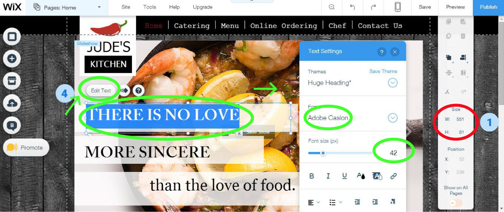
One person tried "size" and adjusted the width and height. But it is for the text box, not the text.
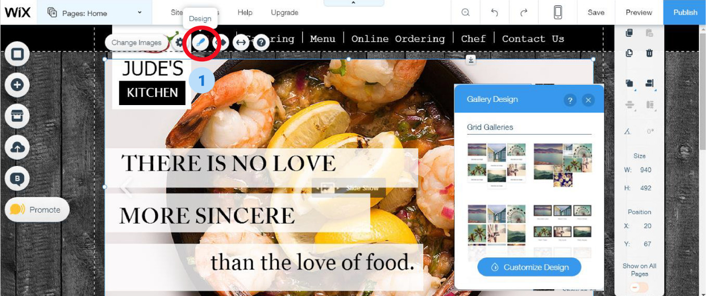
A second failed attempt was that one participant clicked on the image not the text by accident and tried the design button.
For Weebly, the problems were serious. Only one person succeeded in this task.
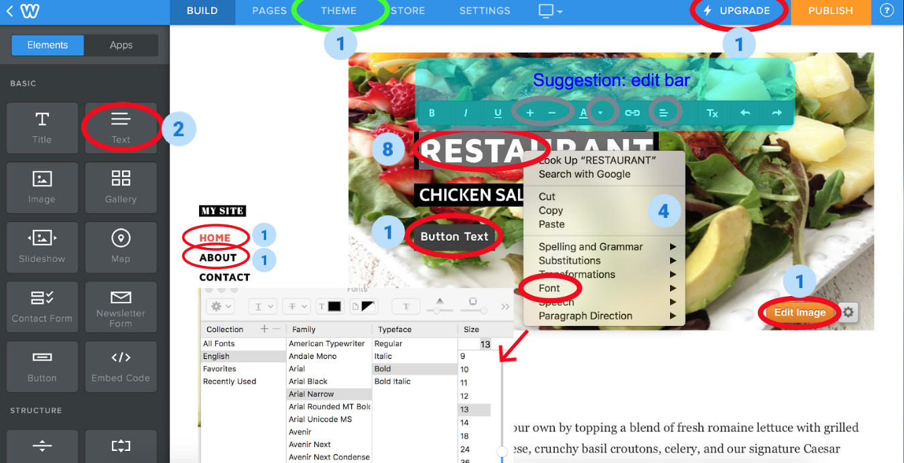
The participants tried to click the headline and an edit bar showed up. They were confused to see that there were no available options for fonts style or size. Someone right clicked the headline and found that there was a font option but sadly no confirm button. The correct path was through "THEME" actually.
Results
Here are 3 perspicuous charts：
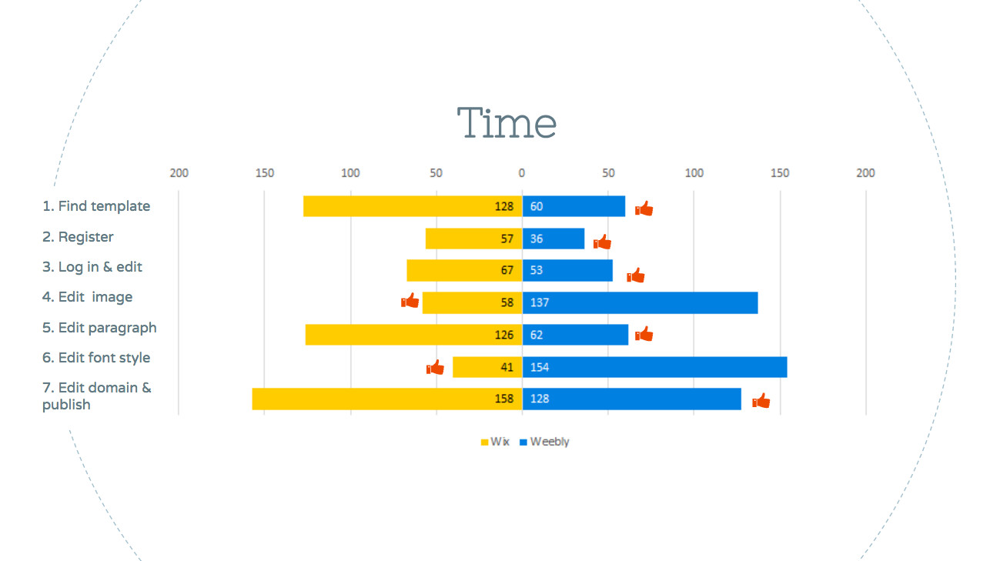
The most contrary pairs came from the task 1, 4, 5, and 6. Task 1 was about finding the given template. Wix has much more templates than Weebly. It showed that having rich templates is not always a good thing if the website cannot provide good search and filter functions.
Task 4 was about changing background picture. The participants spent more time on Weebly because the website didn't show appropriate feedback after the right move, so the participants tried other wrong buttons instead.
Task 5 was to edit a paragraph. The participants spent more time using Wix because the function was integrated with others into a button that required exploration.
As it's mentioned, task 6 was to edit the font. The participants came across a large barrier using Weebly and spent a lot of time on this task.
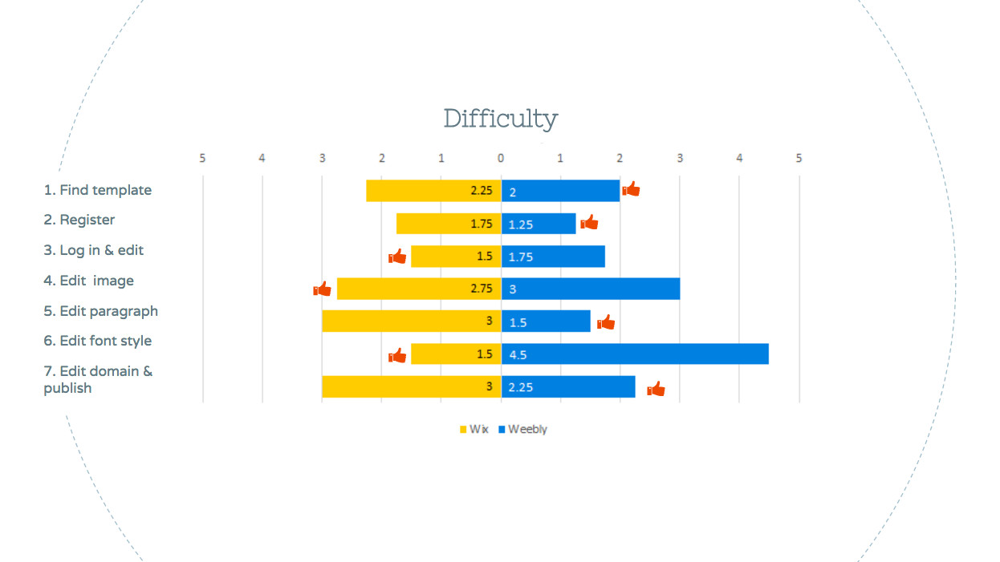
The result of difficulty rating was basically consistent with the time result. For task 1, though the median time spent on Wix is much more than Weebly, Wix didn’t get a significantly higher rating on difficulty. It was because the task is mostly about browsing, so it was not very difficult though it took time.
The participants spent less time using Weebly but thought that Wix was easier in task 3. It was because there was a "my site" button on the homepage and one participant clicked on it that slowed down his progress. It was a correct path too with a little more process.
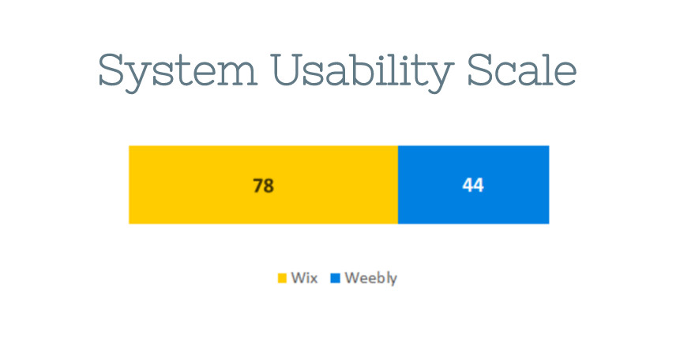
The system usability score was contracting. Wix got 78 which is acceptable (>70), but Weebly's 44 was a rather disappointing score, it is not acceptable (<50). One reason was that the participants tried Weebly were all upset by the task 6 of editing font. The other reason could be small sample size. If we tested on more people, the score would be fairer.
In conclusion, Wix beat Weebly.

The Google's search trend comparison proved that Wix did get more attentions from people.

Suggestions
We didn’t stop from just giving scores and comments. We made several suggestions on how to improve the usability of selecting templates, editing contents (where the most problems were found), and editing domain of both sites.
Take the task 6 as an example:
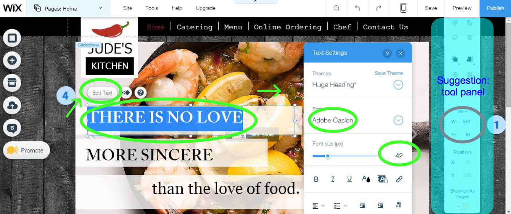
The tool panel on the right side was for every element that was being selected, in this task, the text box. So we suggested that the tool panel show the element's name otherwise it would be confused with other ongoing settings.

No one would expect that to edit the font you should go to the "THEME" and it required too many clicks. We understood that the design meant to keep a consistent font style of the whole page, but it was not intuitive. So we suggested that there should also be an entrance for font editing in the edit bar. There could be a tips window indicating the other method. Also, there should be a font size showing and editing box beside the “plus” and “minus” buttons.
Timeline
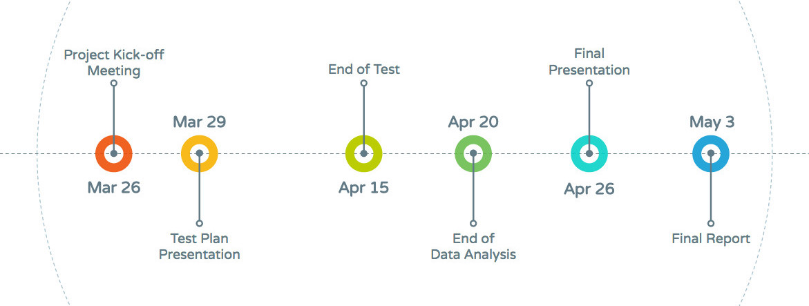
Presentation Slides